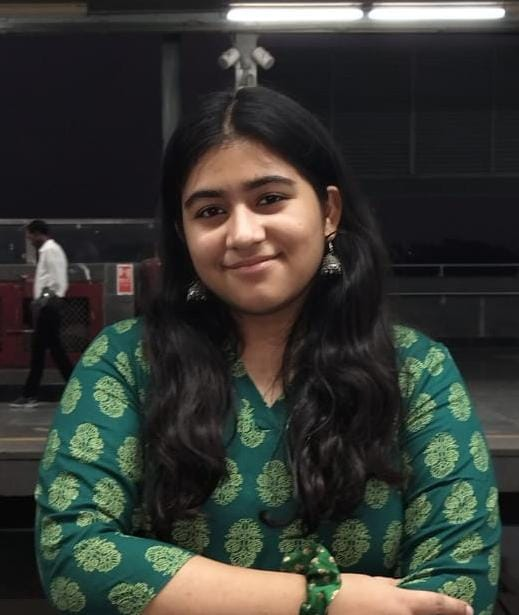

Hi, hello, and welcome to my world — hope you find what you came looking for. Side note: a writer, a wannabe event leader, and forever a liver.
I'm Kenisha. I build things: conferences that bring people together, words that make people think, and ideas that I hope stick around long after I'm done with them.
I've spent the last two years running marketing and social media for multiple conference organizers, founding my own MUN platform (Crimson Summit), and writing about the things that keep me up at night — women's rights, LGBTQ+ voices, justice, and the messy spaces in between.
I'm currently studying business at IIM Bangalore and Jesus & Mary College, but what I really want is to build a life in event management and creative work. Not the corporate kind. The kind where I get to bring ideas to life, work with people who care, and leave something behind that matters.
Current roles first, then the ones that shaped how I work.
Co-founded and ran two online editions of a global Model UN and debate platform with a close-knit team, hosting 150–200 delegates worldwide. Collaborated with Niti Aayog, G20, Y20, UNHCR, and SDG. Built from scratch — operations, outreach, secretariat workflows. Currently on pause, built to bloom again.
Manage Instagram and LinkedIn channels end-to-end — handling graphic design, copywriting, stories, regular posting, and audience reachouts. Skills: Social Media Outreach, Online Media Management.
Part of the organising core team for the B.Voc programme at Jesus and Mary College, coordinating events and student initiatives.
Active member of the college MUN society, contributing to conference planning and delegate engagement.
Part of the marketing team for TEDx at Jesus and Mary College, driving outreach and campaign execution.
Led a cross-departmental organizing team to run a virtual conference for 100 global delegates, overseeing registrations, delegate queries, and live event execution.
Managing technical infrastructure and digital operations for a global Model UN conference, ensuring smooth execution across all committees and events.
Led marketing campaigns and delegate outreach. Set a new standard for conference marketing through creative initiatives.
Coordinated merchandise, signatory and sponsorship outreach, and social media communications.
Managed outreach operations, coordinating with delegates and external stakeholders to drive participation and engagement.
Coordinated logistics, delegate management, and event execution.
Led the marketing team across both editions, managing campaign planning, social media promotion, and delegate outreach.
Chaired the International Press corps, overseeing journalistic coverage, delegate reporting, and press operations.
Completed a marketing internship creating campaign content and streamlining outreach workflows for a student opportunities platform.
Crimson Summit — collaborated with Niti Aayog, G20, Y20, UNHCR, SDG
Subject Topper — Financial Market Management
Best Journalist awards across MUN press corps
Conferences with Best Journalist / Special Mention / High Commendation
Letters of recommendation from Regnum MUN (Former Ambassador to Italy & UN), Synace Conference, Dublieu Educational Services, and Aagosh MUN available on request.
Indian Institute of Management Bangalore
2026 – 2029 (expected)
Jesus and Mary College, University of Delhi
2026 – 2029 (expected)
Verified certificates and letters of recommendation from conferences and organizations I've worked with.
Dublieu Educational Services LLP
Issued 26/02/25 · 3-month internship
Regnum MUN
From Former Ambassador to Italy & Permanent Representative to UN · Jan 2025
Synace Conference 2.0
For exceptional work as Co-Head of Marketing · Dec 2024
Aagosh Model United Nations 1.0
For Best Journalist in International Press · Aug 2025
Opinion columns, open letters, and creative pieces. Click any piece to read the full text.
"Your wounds are the reason we see the daylight. Your wounds are the reason there have been more amendments and laws for women..."
To. Dead Women 27 · July 2024
Dear Women,
Hey, how is it up there? I know you went there not on your own will but because of the consequences. It feels wrong to write this and actually say it to you but thank you. Thank you for giving us life, for building and reconstructing everything just so we could live. I know that it must have been hard for you to face the consequences, especially the rapes and sexual violence but thank you for facing it all and birthing and nurturing us. Your wounds are the reason we see the daylight. Your wounds are the reason there have been more amendments and laws FOR women.
Women of Liberia, thank you for the mass action in Peace Movement, it played a crucial role in ending the civil war and do you know? It also resulted in Ellen Johnson Sirleaf becoming Africa's first FEMALE PRESIDENT. Fascinating, right?
Women of Colombia, thank you for being involved in the negotiations in the peace process between the government and Revolutionary Armed Forces of Colombia (FARC). The final peace agreement had a chapter which addressed the issues such as sexual violence and women's participation. How good do you feel about that?
Women of Rwanda, thank you for facing the genocidal rapes and sexual assaults and still raising us. You know how proud I felt when I knew that post-genocide you were the ones who played key roles in rebuilding the nation, promote gender equality, and achieve remarkable political representation. You know what Rwanda was the one to achieve the highest percentages of women in politics and that too globally. Thank you, you deserve every bit of it.
Well, you deserve to know about some of the amendments made and after all the wounds the old generation women faced and the battles they all fought, let me tell you those were the ones who helped the new generation women live.
I'll begin with CEDAW, or the Foundation for Women's Human Rights. You know right, not every woman used to have their basic human rights. Well, now we have a foundation for that. CEDAW addresses and covers a wide range of issues including women's rights to political participation, education, employment, health care, and family life.
Now Resolution 2331, adopted in 2016, it was to protect vulnerable population from sexual violence, human trafficking and terrorism. It addresses the root causes of all these illegal things including poverty and lack of education.
Well, I guess you will like Resolution 2467, it focuses on well-being and empowerment of survivors, and isn't that something we all collectively wish always happens? It also provides financial assistance and support to survivors of sexual violence.
We still have many challenges to face through, and a lot more are to come as well. But just like you faced it, went through it, and achieved great things which helped in betterment of us women. We all new generation women will also stand through it all, face it, fight it, and make changes to the things that are wrong and correct them.
I want to talk to you about so much more, and tell you more things you deserve to know, and maybe after our fight we might get to talk face to face, that's why I am going to save the rest of the talk for some other time. Until then take care and thank you.
From your children who were saved because of your sacrifices, who were able to see the light because you let yourself go through wounds and cuts and still fought.
Yours Faithfully,
New Generation Women
"The problem isn't only the torture; it's the silent truths, the masked lies, the pressure, and the society that just plays the role of bystanders, sipping their tea and watching everything as if it's a Sunday TV show."
The eyes shed tears of blood, the society shushed her, she was trying her best, yet everyone silenced her, she was right, she did not deserve this, she was forced, and she was wronged. What gave her "husband" the right to destroy her life? What gave his family the right to defend him and claim that she killed herself? Why did she not matter? Was she just an object who was sold away along with the dowry? No, she was not, but she was treated like that.
A 19-year-old who was married into a Pandit family — no, wait, who was bought along with dowry by the Pandit family. Pandits? Aren't they supposed to be wise? Then how could they defend a murderer? So, what if he was her husband? That did not give him the right to brutally torture her for more dowry. At least he could have owned up to the fact that he was nothing without the dowry.
But the problem isn't only the torture; it's the silent truths, the masked lies, the pressure, and the society that just plays the role of bystanders, sipping their tea and watching everything as if it's a Sunday TV show. Till when will an average of 19 to 21 women die every day because of dowry problems? Till when will the families defend their cherished princes and just let them be? Women deserve to live, women deserve to grow, but when their trust is shattered by their people, somewhere they shatter too.
Abusers deserve to go through the highest degree of torture, be publicly boycotted, and not be treated as the apple of their family's eyes. Deaths won't stop until society opens their eyes and defend the victims of torture, not just shushes them in the name of 'family's reputation.' Women are not collateral for a man's ego, and until this nation learns to shame their sons instead of silencing its daughters, nothing will change.
"How do you feel now? How do you feel for not accepting me as I am? How do you feel for discriminating me in my profession just because of my sexuality?"
To. The General Public · 31st August 2024
Dear Everyone,
How do you feel now? How do you feel for not accepting me as I am? How do you feel for discriminating me in my profession just because of my sexuality? How do you feel after humiliating me for my choices? How do you feel for not giving me enough opportunities? How do you feel for misjudging me? How do you feel after bombarding me with threats?
Well, you cannot feel much, I guess. If you can do this much and still feel anything, I think then you are the abnormal one. You know right, that where I am heading with this. Yes, now I am not sitting and just listening to you, I am calling you all out. I never deserved all this, and I know that.
You know, the world calls me Amma now, and I earned this title, I did not just receive it. I could not. I cannot possibly be a mother since I am a homosexual, yet see, I am a mother to the people in the gay community.
I came out to the world in what I remember is 1984, my life has been a rollercoaster, you know. Around 2018, I had to be brought to the Supreme Court of India as well. You might all wonder why I am "Amma." Well, remember how in India, homosexuality was a crime? Section 377 was the one. I was one of many who filed a petition to remove this. I gave my all and founded the Mumbai-based LGBT rights NGO Humsafar Trust in 1994.
I was born in 1947, the year when India received freedom. India used to be open to LGBTQI+ people before Britishers. When the Britishers left, they did two major wrong things. One was that they created a line between India and Pakistan. Second was that they made India criminalise homosexuality.
I was slapped by celebrities, got kicked off a talk show, was dragged to the Supreme Court, and whatnot. I faced it all, even though I never desired it. I am a respectable Hindu; I respect and love my religion. But, on the other hand, I am also a homosexual.
Everyone does not receive warm experiences, and neither do they feel safe. There has always been a hierarchy of rights, and gay rights were always at the end. All I desired and still desire is for the world to be a safe place for the homosexuals and every LGBTQI+ person. I hope for the world to be what I desire, and I hope that my desire comes true one day. This hope will live in my heart, and I will do everything I can in order to fulfill my hope and desire, and maybe the desire of many others.
— Ashok Row Kavi
"Ingredients: 1 cup strict anti-harassment laws, 5 spoons of bystander courage, 3 streetlights per alleyway, pinch of political will."
SAFE RESTAURANT
VOTE RECIPE: SAFER CITY
INGREDIENTS:
METHOD:
Stir it regularly, all in one pot, and keep checking on regularly until you see it ready.
PRO TIP: Stir it all together while being loud, aware and bold.
WARNING: Underconsumption will harm the world in unimaginable ways.
"Sorry Dad, I am really sorry. I tried and am still trying to save what you fought for but I think I just can't anymore..."
To Dad · Heaven · February 2, 2021
Sorry Dad, I am really sorry. I tried and am still trying to save what you fought for but I think I just can't anymore. Kurlantzick declared that I failed to strengthen democracy in recent years and create democratic bulwarks, what can I do now? I have tried everything. I have given my everything.
Yesterday, Tatmadaw seized power by force, disregarding the will of the people expressed in the November 2020 elections, and plunged our nation into darkness. The coup is more than just an assault, it's a violent attack to dreams, the dreams that you gave light to, that will now be thrown into a never ending well.
Since the takeover, innocent civilians have been subjected to brutal violence, arbitrary arrests, and oppression simply for demanding their right to live in a free society, this was not what you left, right? Basic human decency is just a phrase nowadays here, it just doesn't exist anymore. I have appealed to the international community to stand with us, the people of Myanmar.
I need you, your voice and your support. I miss you. This letter definitely won't be the last, this is just the beginning Dad, I promise I will give it my all in being the rope and dragging back what all fell into the well, I might be tired, but I promise, I am not broken, I know that there will be something that will give us back what we deserve.
Love you,
Aung San Suu Kyi
"Rights denied, excluded from all, beaten to death, disowned by own. Wonder what the crime must be — nothing much, just having the desire to live freely."
Rights denied, excluded from all, beaten to death, disowned by own, and whatnot. Wonder what the crime must be. Nothing much, just having the desire to live with their sexual orientations. Guess what? This is a crime, was even illegal once. Why? One may wonder. Well, well, society has rules, you see. The rules that one needs to abide by in order to just live. Doesn't matter to society if people live happily or not, all the care is for is that the rules must be abided by.
LGBTQI people face violence, discrimination, and whatnot by their own family. The desire of them to be free is what society does not accept. Are they not humans? How are they wrong or abnormal if they were born this way?
Lived the crucial years with the thought that they were abnormal, never felt free, never felt happy, never felt loved. Wonder what the reason is that normal people like LGBTQI are said to be abnormal? The reason, the hindrance, is what is already said, stereotypes and societal norms. More than 47% of LGBTQI workers have experienced discrimination or harassment at their workplace.
Born Free and Equal, Pride Month, Pride Parade, and many other campaigns and programs are something that have come into existence and that have created awareness among the people, the society. Acceptance of LGBTQI people is near but not done yet. The Convention on the Rights of the Child (CRC) is something that guarantees that no child will be discriminated against based on their views or sexual orientation.
LGBTQI people deserve equal treatment as heterosexual people. LGBTQI deserves what they desire and not what society desires.
For event collaborations, creative projects, or just to say hi — reach out through either of these.